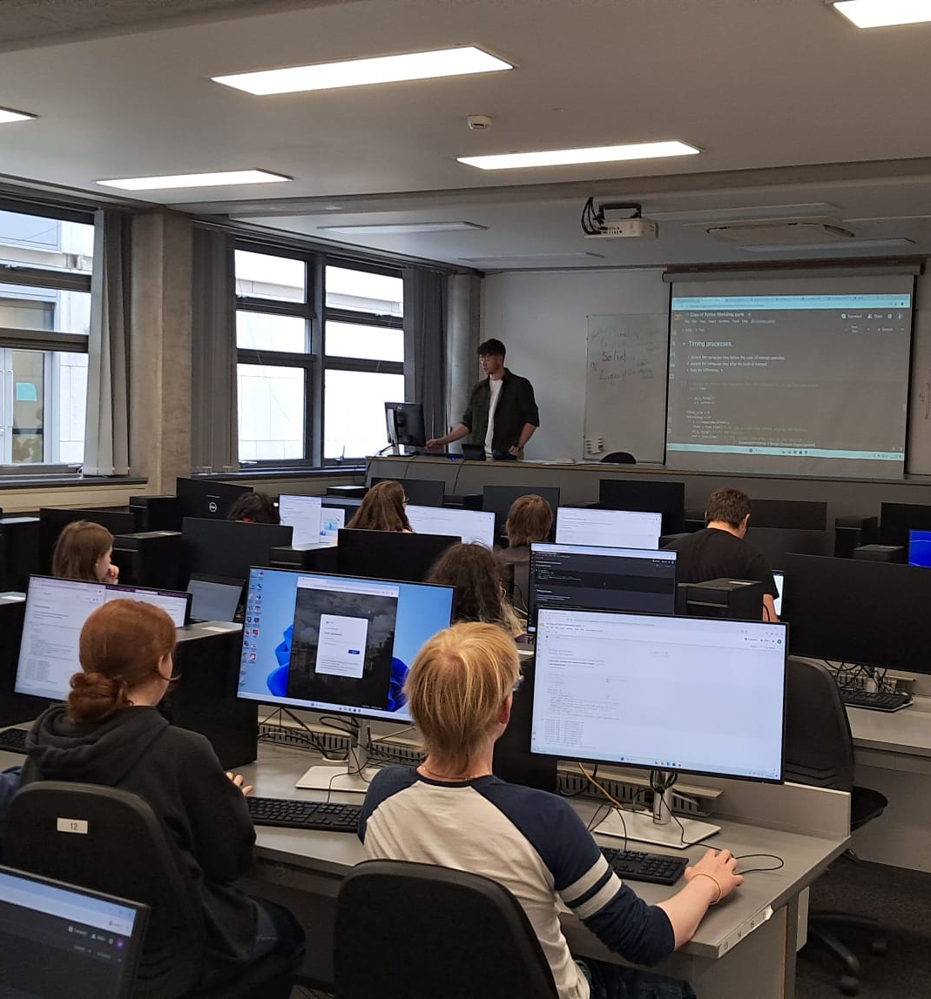
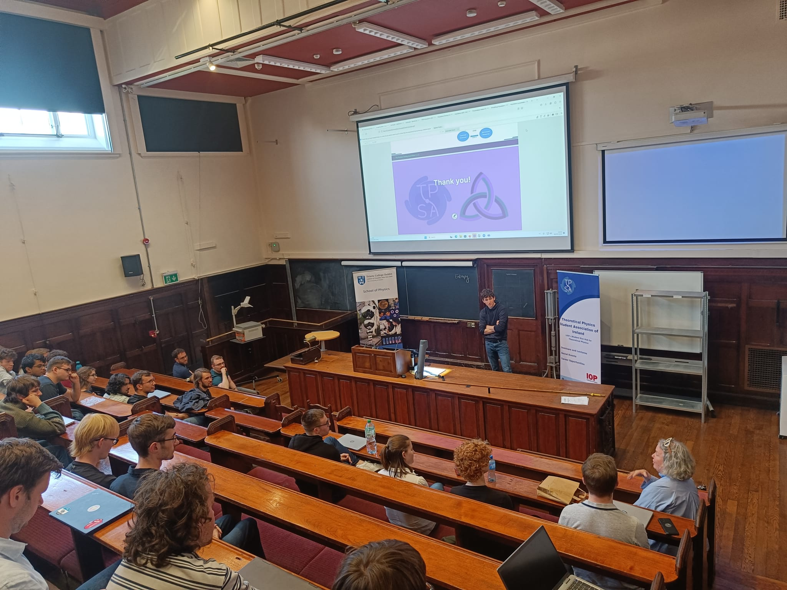
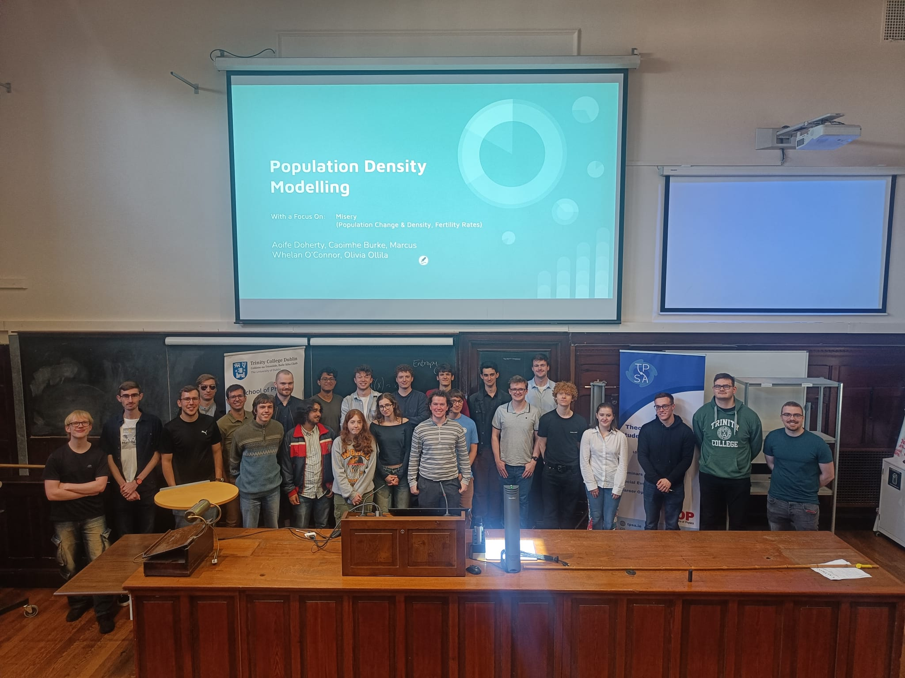

Hosted by:

Our workshops are back this year! Workshops run from 10am to 4pm during the first and second weeks of September, all held in the SNIAM computer labs at Trinity.
Spaces are limited, so please sign up below as soon as you can. You may register for any number of workshops. Looking forward to seeing you there!
*The topics for Wednesday and Thursday may switch; we will notify you in advance if this happens.
Our hackathon is presented by The Problem Solving Association CLG.
You can sign up below to take part in this years hackathon.
Every year we run a week of computational workshops designed to take someone from close to zero programming knowledge to having a solid base of knowledge for scientific computing. The workshops range in difficulty from introduction to Python programming to Markov Chain Monte Carlo methods. They also range in scope from more physics theory oriented workshops such as the theory and logic behind quantum computing to more purely computational ones such as Introduction to Machine Learning. This means anyone can find something that suits them. This year we are changing the workshop line-up to a mostly new one so make sure to follow our socials to not miss out!
Building from the workshops we also run an annual week-long hackathon. Our hackathons are intended to give participants an opportunity to apply physical principles and broader scientific computing methods to problems of wider societal importance. Previously our hackathons were focused on developing an algorithm for a fair and unbiased creation of constituency boundaries to prevent gerrymandering, and on modelling the population dynamics in Ireland to eventually optimise infrastructure investment. Both produced insightful results and we are looking forward to our next hackathon coming up in September!



Hosted by: